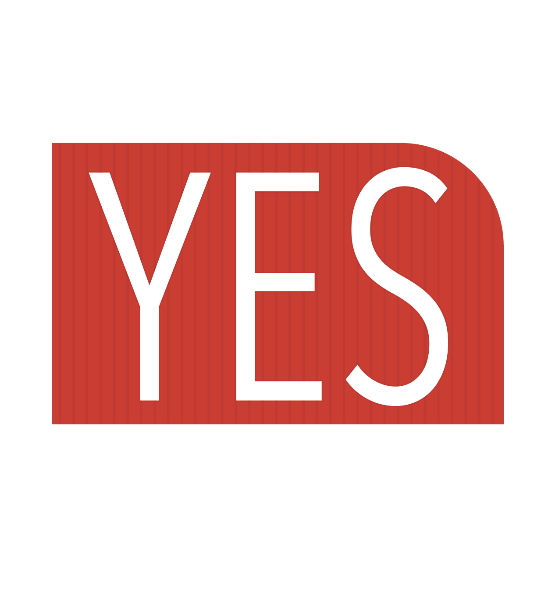
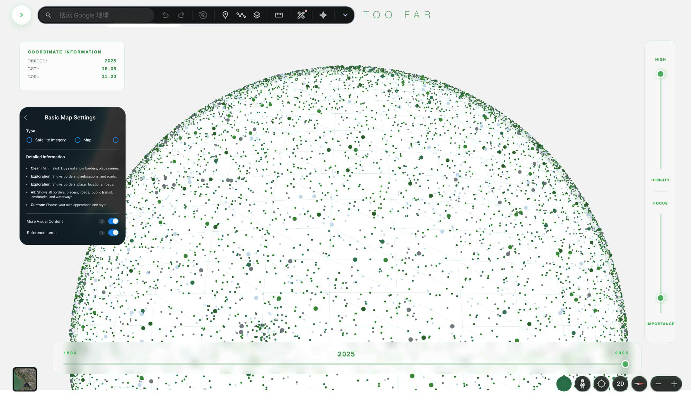
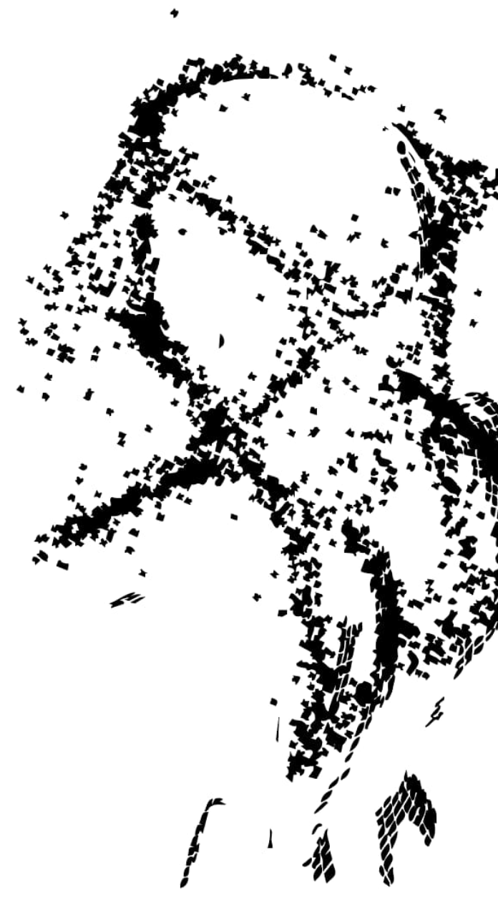
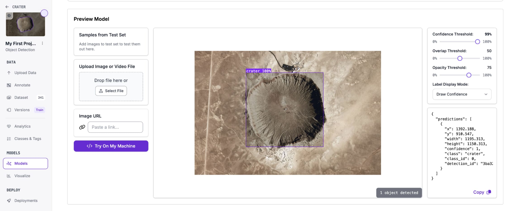

Data visualization & Hardware
Data Visualization & Hardware
Immersive Spatial & Interactive Experience

Graphic Design & Visual Essay

Interactive Health & Conceptual Hardware Design

Object Detection & Fashion

Archival data work
Interactive Installation & Optical Visualization
Imagination, Digital Sculpture, and Experimentation
Coordinate Archive & Spatial Narrative
Chart & Information Design
Experimental Video & Digital Ritual
Motion Capture & Experimental Video